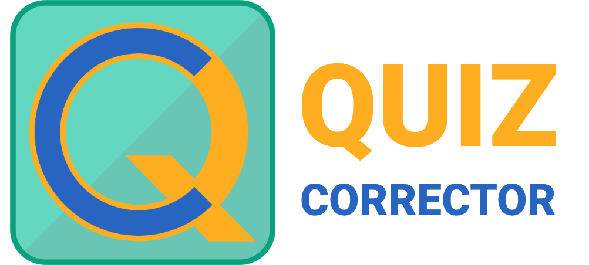

Informatique
- Des protocoles de transmission de données pour les lignes d’arrivée des courses cyclistes — vendus à l’époque au Tour de France.
-
Un programme de correction de quiz musicaux, pour des jeux de masse.

- Un programme de récolte d’informations pour des navettes aéroport (transport de personnes) et de gestion des chauffeurs : préparation automatique des rappels aux clients, consultation des données de vol, GPS automatique vers les adresses des clients…